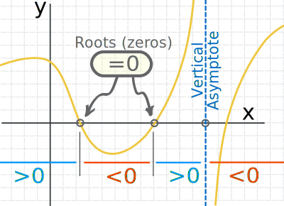
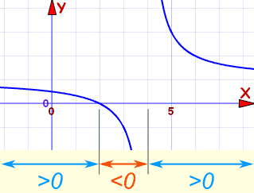

Solving Rational Inequalities
Rational
A Rational Expression looks like:

Inequalities
Sometimes we need to solve rational inequalities like these:
| Symbol |
Words |
Example |
|---|---|---|
|
> |
greater than |
(x+1)/(3−x) > 2 |
|
< |
less than |
x/(x+7) < −3 |
|
≥ |
greater than or equal to |
(x−1)/(5−x) ≥ 0 |
|
≤ |
less than or equal to |
(3−2x)/(x−1) ≤ 2 |
Solving
Solving inequalities is very like solving equations ... you do most of the same things.
|  |
| When we solve inequalities we try to find interval(s), such as the ones marked "<0" or ">0" |
These are the steps:
- find "points of interest":
- the "=0" points (roots), and
- "vertical asymptotes" (where the function is undefined)
- in between the "points of interest", the function is either greater than zero (>0) or less than zero (<0)
- then pick a test value to find out which it is (>0 or <0)
Here is an example:
Example: 3x−10x−4 > 2
First, let us simplify!
But You Cannot Multiply By (x−4)
Because "x−4" could be positive or negative ... we don't know if we should change the direction of the inequality or not. This is all explained on Solving Inequalities.
Instead, bring "2" to the left:
3x−10x−4 − 2 > 0
Then multiply 2 by (x−4)/(x−4):
3x−10x−4 − 2x−4x−4 > 0
Now we have a common denominator, let's bring it all together:
3x−10 − 2(x−4)x−4 > 0
Simplify:
x−2x−4 > 0
Second, let us find "points of interest".
At x=2 we have: (0)/(x−4) > 0, which is a "=0" point, or root
At x=4 we have: (x−2)/(0) > 0, which is undefined
Third, do test points to see what it does in between:
At x=0:
- x−2 = −2, which is negative
- x−4 = −4, which is also negative
- So (x−2)/(x−4) must be positive
We can do the same for x=3 and x=5, and end up with these results:
| x=0 | x=2 | x=3 | x=4 | x=5 | |
|---|---|---|---|---|---|
| x−2 < 0 | x−2 > 0 | x−2 > 0 | |||
| x−4 < 0 | x−4 < 0 | x−4 > 0 | |||
| (x−2)/(x−4) is | > 0 | 0 | < 0 | undefined | > 0 |
That gives us a complete picture!
And where is it > 0 ?
- Less than 2
- More than 4
So our result is:
(−∞, 2) U (4, +∞)
We did all that without drawing a plot!
But here is the plot of (x−2)/(x−4) so you can see:
